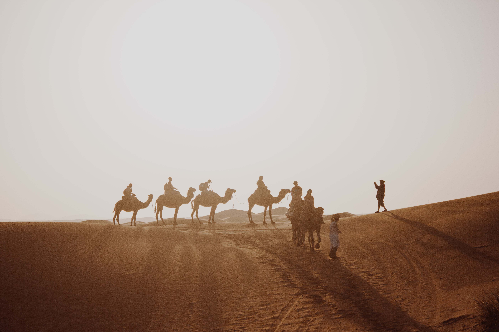

Outils
En général, ces techniques permettent de combler les besoins primaires de l'humain : eau, nourriture, abri, habitat, et de permettre de bien penser, de demander de l'aide, de se déplacer en toute sécurité, d'éviter les interactions désagréables avec des animaux et des plantes et pour les premiers soins. La plupart de ces techniques proviennent des idées de base et des capacités que l'être humain a développées depuis des milliers d'années. Elles permettent de mieux profiter des séjours prolongés en milieu reculés et des escapades dans la nature. Les personnes qui font de la randonnée pédestre, de l'équitation, de la pêche, de la chasse ou autre activité, doivent s'assurer qu'elles ont les compétences de base de survie en milieu sauvage pour gérer une situation d'urgence. Certaines personnes utilisent aussi ces compétences pour mieux apprécier la nature.
Objectif
En général, ces techniques permettent de combler les besoins primaires de l'humain : eau, nourriture, abri, habitat, et de permettre de bien penser, de demander de l'aide, de se déplacer en toute sécurité, d'éviter les interactions désagréables avec des animaux et des plantes et pour les premiers soins. La plupart de ces techniques proviennent des idées de base et des capacités que l'être humain a développées depuis des milliers d'années. Elles permettent de mieux profiter des séjours prolongés en milieu reculés et des escapades dans la nature. Les personnes qui font de la randonnée pédestre, de l'équitation, de la pêche, de la chasse ou autre activité, doivent s'assurer qu'elles ont les compétences de base de survie en milieu sauvage pour gérer une situation d'urgence. Certaines personnes utilisent aussi ces compétences pour mieux apprécier la nature.En général, ces techniques permettent de combler les besoins primaires de l'humain : eau, nourriture, abri, habitat, et de permettre de bien penser, de demander de l'aide, de se déplacer en toute sécurité, d'éviter les interactions désagréables avec des animaux et des plantes et pour les premiers soins. La plupart de ces techniques proviennent des idées de base et des capacités que l'être humain a développées depuis des milliers d'années. Elles permettent de mieux profiter des séjours prolongés en milieu reculés et des escapades dans la nature. Les personnes qui font de la randonnée pédestre, de l'équitation, de la pêche, de la chasse ou autre activité, doivent s'assurer qu'elles ont les compétences de base de survie en milieu sauvage pour gérer une situation d'urgence. Certaines personnes utilisent aussi ces compétences pour mieux apprécier la nature.
Action
En général, ces techniques permettent de combler les besoins primaires de l'humain : eau, nourriture, abri, habitat, et de permettre de bien penser, de demander de l'aide, de se déplacer en toute sécurité, d'éviter les interactions désagréables avec des animaux et des plantes et pour les premiers soins. La plupart de ces techniques proviennent des idées de base et des capacités que l'être humain a développées depuis des milliers d'années. Elles permettent de mieux profiter des séjours prolongés en milieu reculés et des escapades dans la nature. Les personnes qui font de la randonnée pédestre, de l'équitation, de la pêche, de la chasse ou autre activité, doivent s'assurer qu'elles ont les compétences de base de survie en milieu sauvage pour gérer une situation d'urgence. Certaines personnes utilisent aussi ces compétences pour mieux apprécier la nature.
Finalisation
En général, ces techniques permettent de combler les besoins primaires de l'humain : eau, nourriture, abri, habitat, et de permettre de bien penser, de demander de l'aide, de se déplacer en toute sécurité, d'éviter les interactions désagréables avec des animaux et des plantes et pour les premiers soins. La plupart de ces techniques proviennent des idées de base et des capacités que l'être humain a développées depuis des milliers d'années. Elles permettent de mieux profiter des séjours prolongés en milieu reculés et des escapades dans la nature. Les personnes qui font de la randonnée pédestre, de l'équitation, de la pêche, de la chasse ou autre activité, doivent s'assurer qu'elles ont les compétences de base de survie en milieu sauvage pour gérer une situation d'urgence. Certaines personnes utilisent aussi ces compétences pour mieux apprécier la nature. En général, ces techniques permettent de combler les besoins primaires de l'humain : eau, nourriture, abri, habitat, et de permettre de bien penser, de demander de l'aide, de se déplacer en toute sécurité, d'éviter les interactions désagréables avec des animaux et des plantes et pour les premiers soins. La plupart de ces techniques proviennent des idées de base et des capacités que l'être humain a développées depuis des milliers d'années. Elles permettent de mieux profiter des séjours prolongés en milieu reculés et des escapades dans la nature. Les personnes qui font de la randonnée pédestre, de l'équitation, de la pêche, de la chasse ou autre activité, doivent s'assurer qu'elles ont les compétences de base de survie en milieu sauvage pour gérer une situation d'urgence. Certaines personnes utilisent aussi ces compétences pour mieux apprécier la nature.